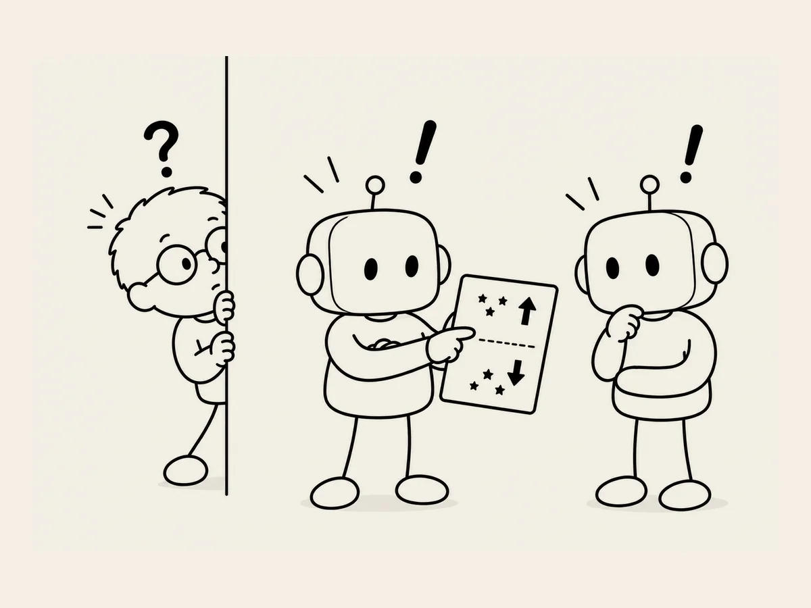

8.
Cheat by Watching AIs Talk?
I thought I'd finished all the characters.
I did one final check.
Huh?
Tiny stars were twinkling above the elephant's head.
I checked the other characters.
Above the owl, the panda, the koala...
Tiny stars were twinkling there too.
They were definitely there.
"Get rid of these stars."
I tried fixing it several times, but they wouldn't go away.
Sometimes AI needs a little help from a human.
That's when I use my own secret weapon.
I imitate the way ChatGPT gives instructions to Codex.
“Move all the stars below the two-thirds mark of the screen up toward the top. But don't bunch them all together in one place. Spread them evenly across the upper part of the screen."
This time, it worked.
Cheating worked.
